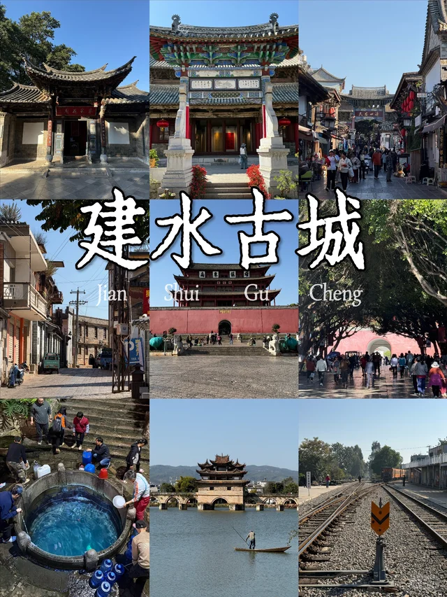
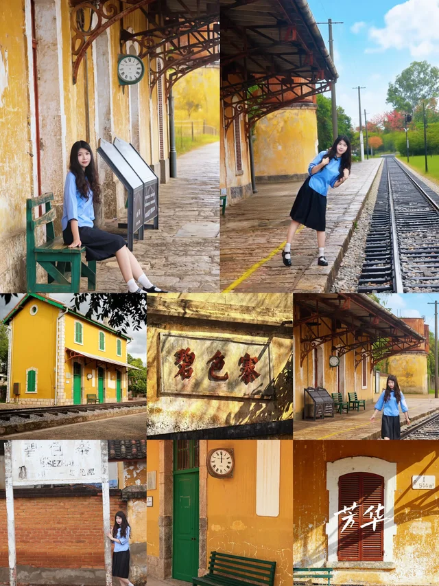
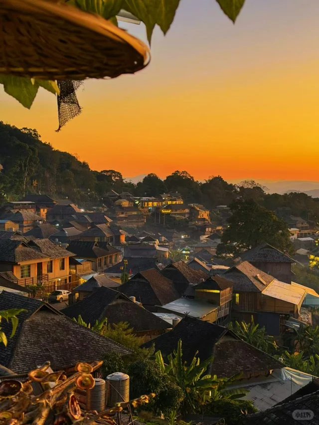
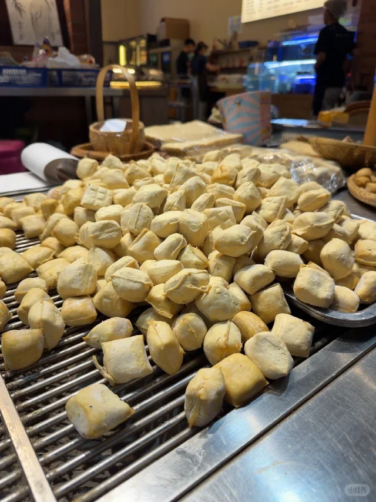
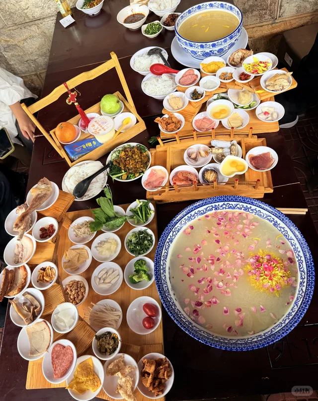
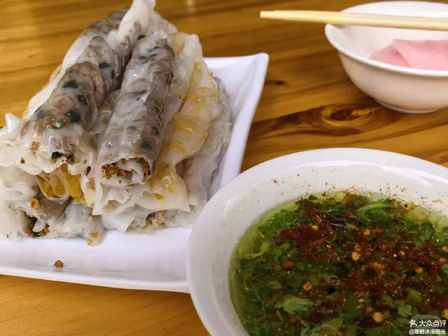
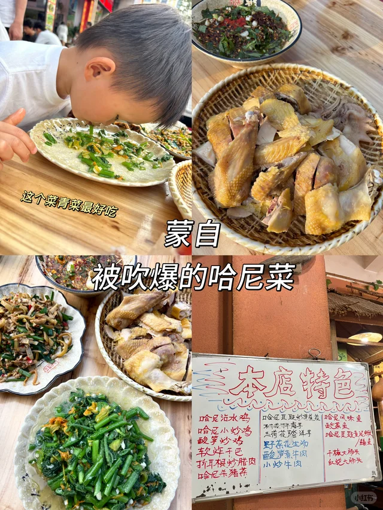

基于50篇小红书笔记的完整指南
| 起点 | 终点 | 距离 | 自驾时间 | 交通方式 |
|---|---|---|---|---|
| 昆明 | 建水 | 220km | 3小时 | 自驾/动车(2h) |
| 建水 | 元阳 | 90km | 2.5小时 | 自驾/包车 |
| 元阳 | 蒙自 | 150km | 3小时 | 自驾/包车 |
| 蒙自 | 普者黑 | 180km | 3.5小时 | 自驾/包车 |
| 普者黑 | 昆明 | 290km | 4小时 | 自驾/动车 |
| 昆明 | 弥勒 | 140km | 2小时 | 自驾/动车 |
| 弥勒 | 蒙自 | 130km | 2小时 | 自驾/动车 |
| 昆明 | 普洱 | 400km | 5小时 | 自驾/动车 |
| 普洱 | 景迈山 | 170km | 3.5小时 | 自驾/包车 |
| 普洱 | 西双版纳 | 120km | 2小时 | 自驾/大巴 |
适合人群：首次来滇南，时间适中的游客
适合人群：深度游爱好者，时间充裕
适合人群：想同时体验滇南和热带风情
适合人群：不想长途自驾，预算有限
费用参考：人均1500元（动车+滴滴+住宿）

印象：千年古城，没有丽江的商业化，本地人还在里面生活
必游景点：
建议停留：2天
费用：2天人均200元（不含交通）
交通：昆明动车2小时直达
核心景点：
最佳时间：11月-次年4月（灌水期）
建议停留：2-3天

印象：滇南慢城天花板，过桥米线发源地，《芳华》取景地
City Walk路线：
必游景点：
最佳时间：3-5月、9-11月
建议停留：1天
特色：
最佳时间：7-8月（荷花季）
建议停留：2天

特色体验：
建议停留：2天
特色：
建议停留：1天
交通：昆明动车可达
牛肉小串蘸干碟封神

🫘 建水烤豆腐围炉坐着吃，老板丢玉米粒计数
建水限定，清甜脆嫩
5元豆花随便吃

🍜 过桥米线蒙自发源地，吴记榴乡推荐

🥟 越南小卷粉地道小吃

🍗 哈尼蘸水鸡特色菜
周日限定，烟火气天花板
抚仙湖特色
腾冲特色
普洱特产
咖啡+牛油果爱好者小城
人均：1500-2000元
包含：动车+经济酒店+当地交通+餐饮
示例：红河州5天4晚动车游，人均1500元
人均：3000-4000元
包含：自驾租车+中档酒店/民宿+餐饮+门票
人均：4000-6000元
包含：全程自驾+特色民宿+体验项目
| 项目 | 费用 |
|---|---|
| 自驾租车 | 200-300元/天 |
| 普通酒店 | 150-300元/晚 |
| 特色民宿 | 200-500元/晚 |
| 餐饮 | 人均50-100元/天 |
| 碧色寨门票 | 80元 |
| 东风韵门票 | 80元 |
优点：自由度高，沿途风光美
昆明租车：机场取车，方便
动车线路：
当地交通：滴滴/包车
适合人群：不想长途自驾的游客